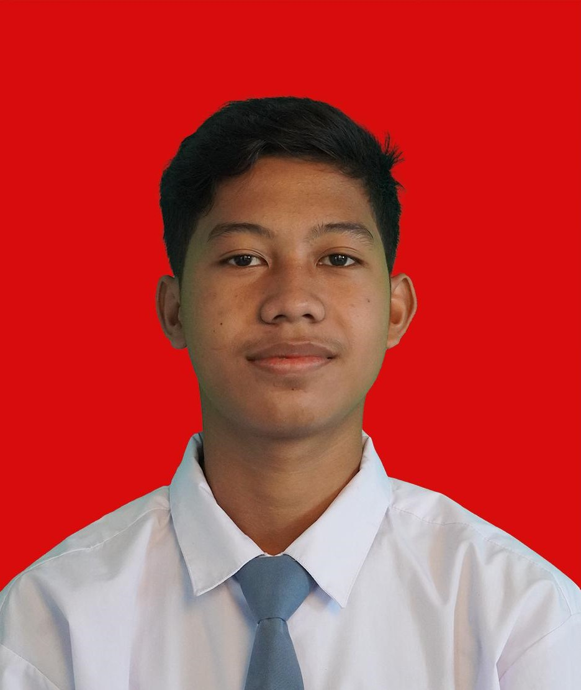

Hallo saya Bagus
Nama lengkap saya adalah Bagus Raziq Safaras
Saya lahir di Bogor pada tahun 2006 Bulan Desember Tanggal 27,Dan Saya sekarang tinggal di Citra Indah
Sekarang saya sedang belajar di 10 PPLG,dan saya tertarik dengan dunia pemrograman.
Follow gua di: